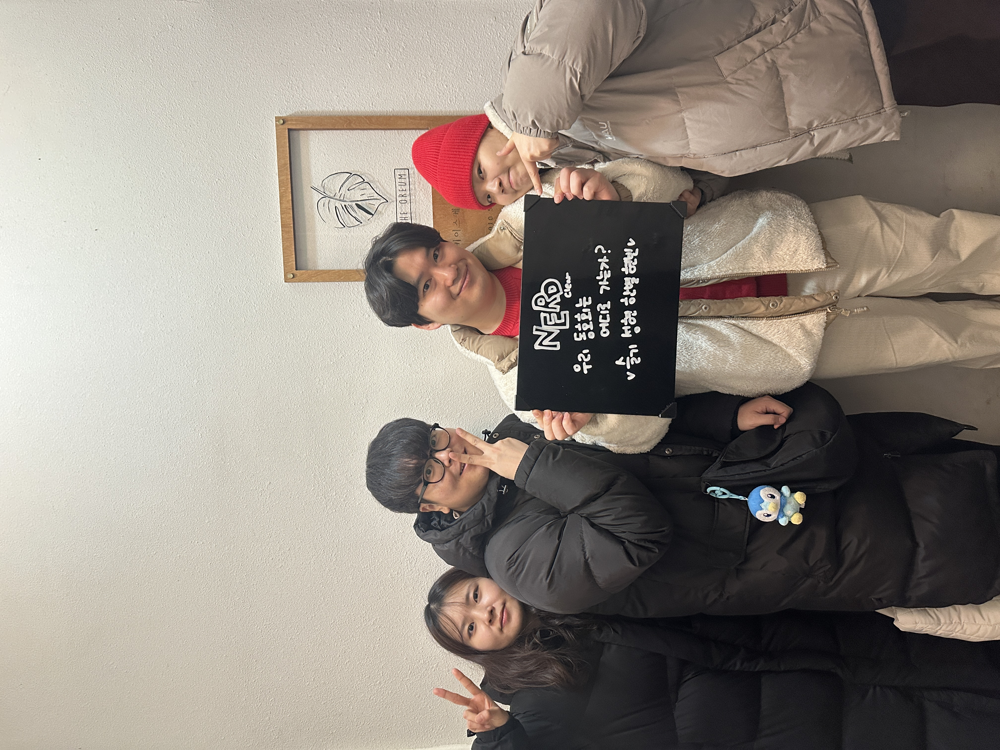
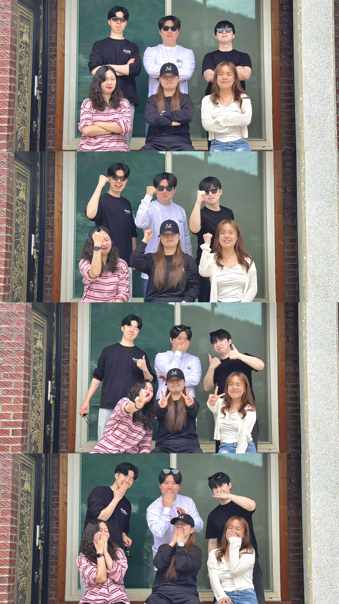
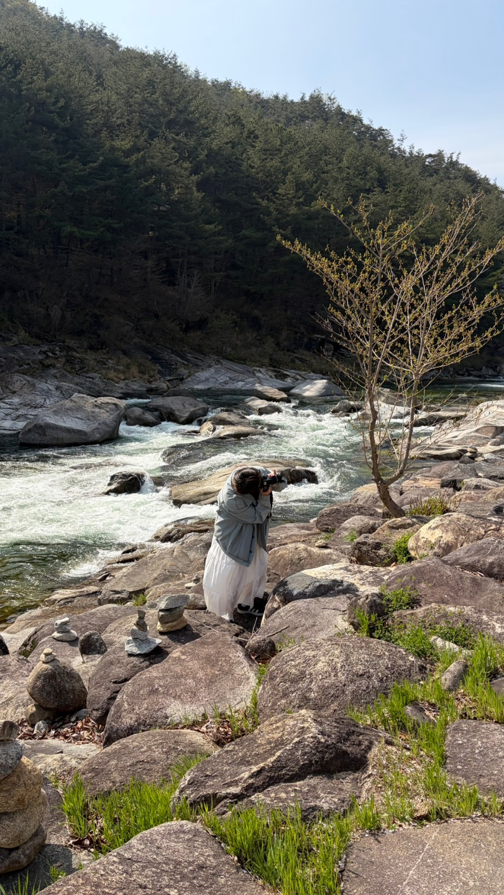

돋보기를 움직여 행운을 발견하면 시작됩니다
데이터와 사람 사이의 빈틈을 발견하고,
보이지 않던 길을 디자인합니다.
저는 사용자 인터뷰에서 얻은 작은 단서, 데이터에 숨어 있던 숫자,
무심코 흘린 한마디처럼 사방에 흩어져 있는 조각들을 모아 하나의 해답으로 찾아낼 때 가장 즐겁습니다.
UI는 치열한 고민과 결정을 시각적으로 보여주는 창구라고 생각합니다. 그렇기에 무작정 화면을 그리기보다 가설 수립, 데이터 검증, 그리고 이를 쉬운 언어로 풀어내는 빌드업 과정에 집중합니다.
수많은 네잎클로버 틈에서 마침내 진짜 행운을 찾아내듯, 평범함 속에서 서비스의 방향을 바꿀 결정적인 단 하나의 ‘발견’을 만들어가고 싶습니다.
아티스트 탐색부터 콘텐츠 경험, 팬 유입과 소통까지 자연스럽게 연결하는 글로벌 엔터테인먼트 플랫폼

제한된 시간, 흩어진 단서, 팀원과의 분담 — 사용자 시나리오를 통째로 체험하는 느낌이에요. 막힐 때 관점을 바꾸는 연습으로 좋아합니다.

낯선 도시의 표지판, 메뉴판, 결제 화면 — 다른 문화의 UI를 직접 사용해보는 일이 가장 큰 자산입니다. 한 해 두 번은 꼭 떠나요.

뷰파인더 안에서 프레임을 정리하는 시간. 무엇을 빼고 무엇을 남길지 — 디자인과 똑같은 결정의 연속이라 손에서 카메라를 놓지 않습니다.